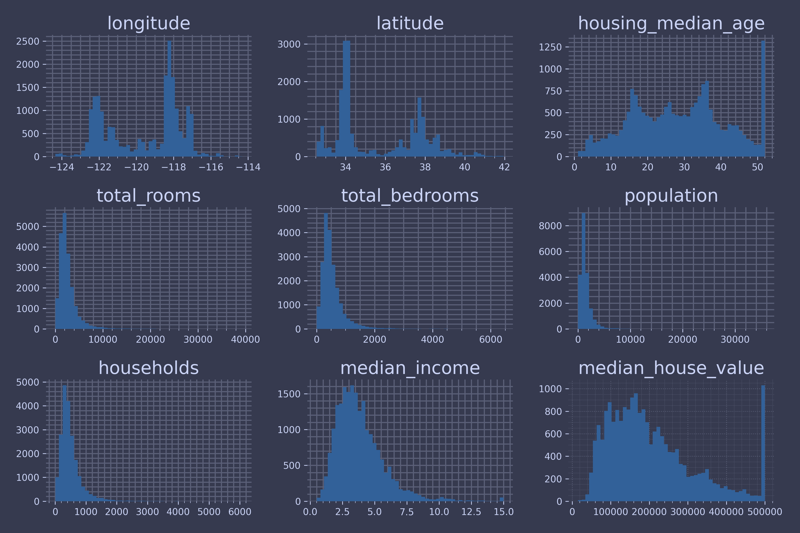
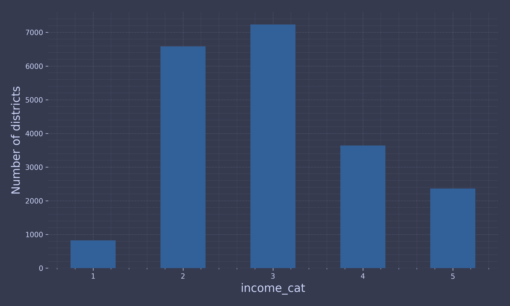
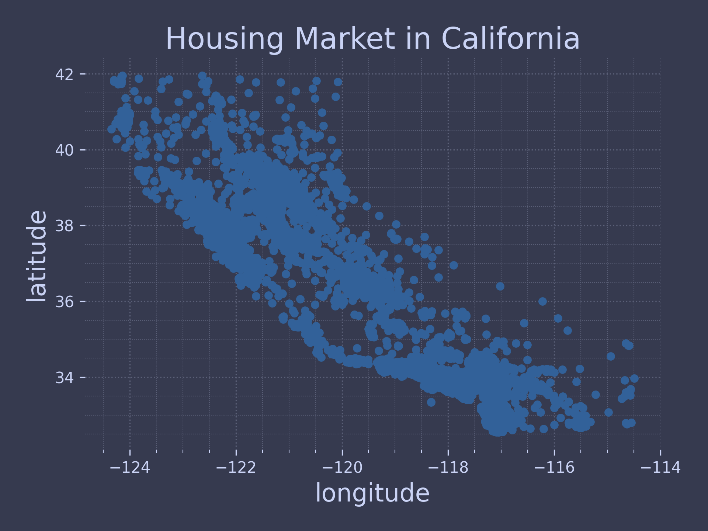
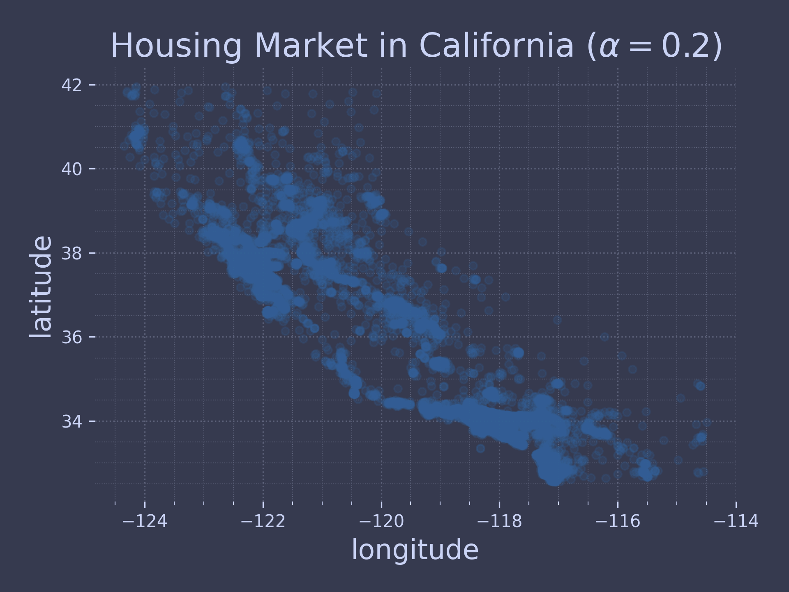
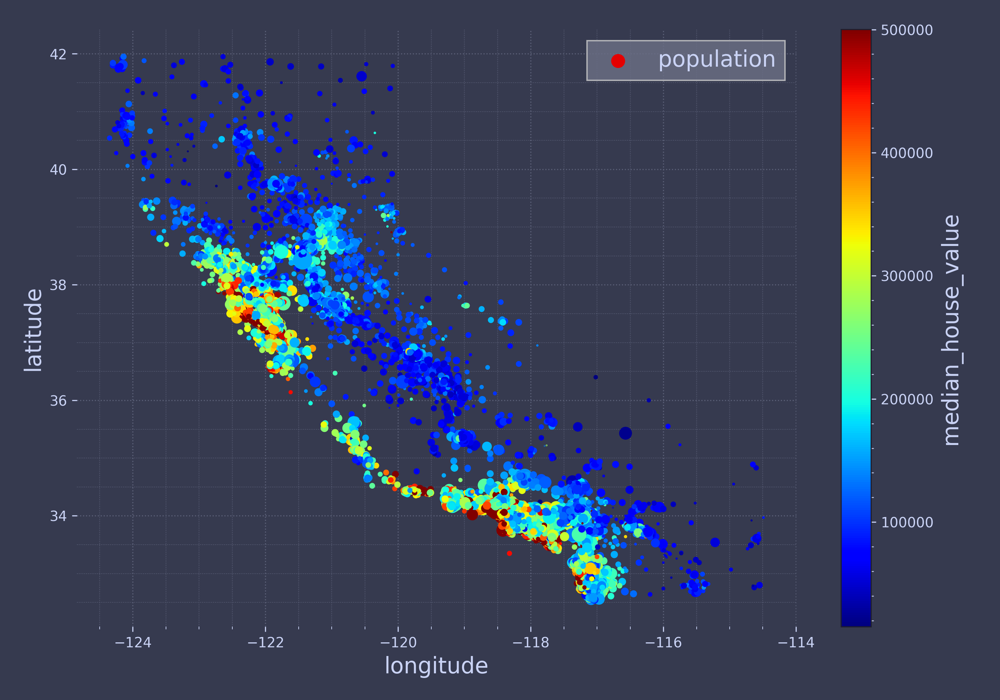
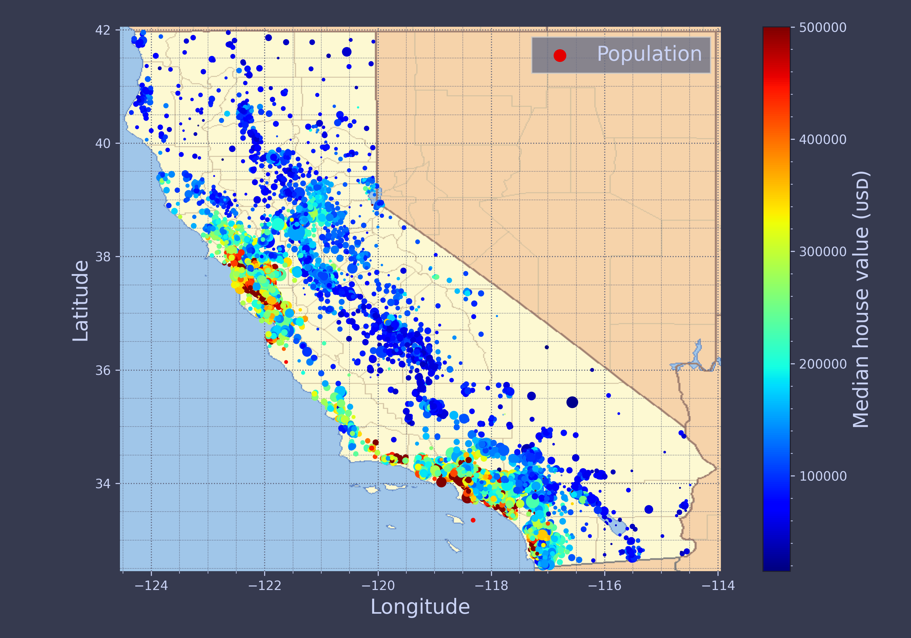
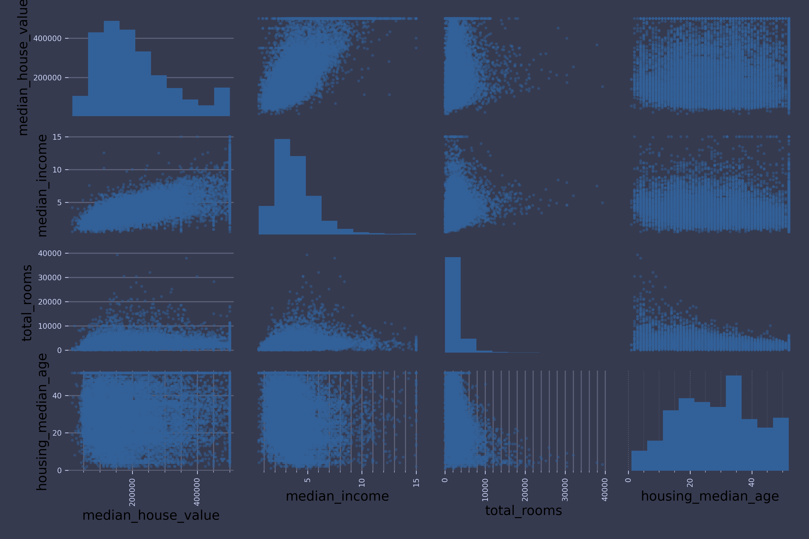
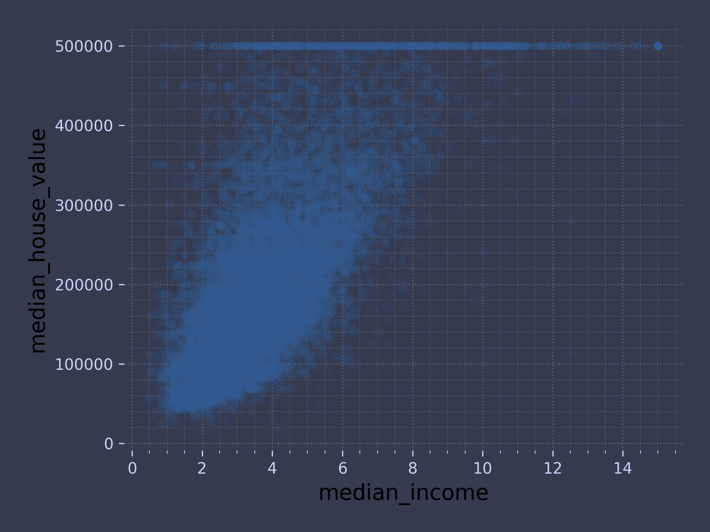

Code for Machine Learning and Data Science II End to End ML Project
Table of Contents
These are the code snippets used in End to End ML Project
part of Machine Learning and Data Science II.
Introduction
Preamble
# import for custom color cycling from cycler import cycler # define custom default colors for generating image with # consisten color cycling new_colors = ['#326199', '#4fb1a1', '#fcc055', '#eb8d50', '#df6e5b', '#9a031e', '#984ea3'] # define a function to store matplotlib style information def plot_settings(style, size=None): # define the styles for generating web compatible images. if style == "web": style = { 'axes.edgecolor': '1e1e2e', 'axes.facecolor': '363a4f', 'axes.axisbelow' : True, 'axes.labelcolor' : 'cad3f5', 'axes.grid': True, 'axes.grid.which': 'both', 'axes.spines.left': False, 'axes.spines.right': False, 'axes.spines.top': False, 'axes.spines.bottom': False, 'axes.prop_cycle': cycler(color=new_colors), 'grid.color': '5b6078', 'grid.linewidth': '1.2', 'xtick.color': 'cad3f5', 'xtick.major.bottom': True, 'xtick.labelsize': 10, 'xtick.minor.bottom': True, 'xtick.minor.bottom': True, 'xtick.minor.visible': True, 'xtick.minor.width': 0.5, 'ytick.color': 'cad3f5', 'ytick.major.left': True, 'ytick.minor.left': False, 'ytick.minor.visible': True, 'ytick.labelsize': 10, 'savefig.facecolor': '363a4f', 'text.color': 'cad3f5', 'lines.linewidth': 4, 'font.size': 16, 'legend.fancybox' : False, 'legend.facecolor' : '6c7086', 'figure.facecolor': '838ba7', } # Define the font dictionary to store label formatting font = {'color': '#cad3f5', 'weight': 'normal', 'size': 16, } elif style == "slide": style = { 'axes.edgecolor': 'f0f0f0', 'axes.facecolor': 'fafafa', 'axes.axisbelow' : True, 'axes.labelcolor' : '1e1e1e', 'axes.grid': True, 'axes.grid.which': 'both', 'axes.spines.left': False, 'axes.spines.right': False, 'axes.spines.top': False, 'axes.spines.bottom': False, 'axes.prop_cycle': cycler(color=new_colors), 'grid.color': 'f0f0f0', 'grid.linewidth': '1.2', 'xtick.color': '1e1e1e', 'xtick.major.bottom': True, 'xtick.labelsize': 10, 'xtick.minor.bottom': True, 'xtick.minor.bottom': True, 'xtick.minor.visible': True, 'xtick.minor.width': 0.5, 'ytick.color': '1e1e1e', 'ytick.major.left': True, 'ytick.minor.left': False, 'ytick.labelsize': 10, 'savefig.facecolor': 'fafafa', 'text.color': '1e1e1e', 'lines.linewidth': 4, 'font.size': 16, 'legend.fancybox' : False, 'legend.facecolor' : '6c7086', 'figure.facecolor': 'fafafa', } # Define the font dictionary to store label formatting font = {'color': '#1e1e1e', 'weight': 'normal', 'size': 16, } # Apply style sheet for use in matplotlib plt.rcParams.update(style) # Define figure size based on the number of figures if size == 1: plt.figure(figsize = (10, 6)) elif size == 2: plt.figure(figsize = (12, 5)) elif size == 3: plt.figure(figsize = (12, 8)) elif size == None: return 0 def grid_settings(style): if style == "web": plt.grid(which='minor', color='#5b6078', linestyle=':', linewidth=0.5) plt.grid(which='major', color='#5b6078', linestyle=':', linewidth=0.8) elif style == "slide": plt.grid(which='minor', color='#c8c8c8', linestyle=':', linewidth=0.5) plt.grid(which='major', color='#c8c8c8', linestyle=':', linewidth=0.8) plt.minorticks_on()
# Define paths to store images IMAGES_PATH = Path() / "images" / "End-to-End-ML-Project" # Check if path exists IMAGES_PATH.mkdir(parents=True, exist_ok=True) def store_fig(fig_id, tight_layout=True, fig_extension="png", resolution=300, style=None, close=None): if tight_layout: plt.tight_layout() if style == "web": plt.grid(which='minor', color='#5b6078', linestyle=':', linewidth=0.5) plt.grid(which='major', color='#5b6078', linestyle=':', linewidth=0.8) fig_extension = "png" elif style == 'slide': grid_settings(style = "slide") fig_extension = "pdf" path = IMAGES_PATH / f"{fig_id}.{fig_extension}" plt.savefig(path, format=fig_extension, dpi=resolution) if close: plt.close()
Download Initial Data
First lets load the necessary modules for downloading the data so we can work on it.
from pathlib import Path import pandas as pd # for dataframes import tarfile # read/write tar files # to access and download data from web import urllib.request from tabulate import tabulate # for table printing
Define a function called to access and download the data, finally returning a read of it using pandas.
def load_housing_data(): # path to save the file tarball_path = Path("datasets/housing.tgz") # check if the path exists, if not create one if not tarball_path.is_file(): Path("datasets").mkdir(parents=True, exist_ok=True) url = "https://github.com/ageron/data/raw/main/housing.tgz" urllib.request.urlretrieve(url, tarball_path) with tarfile.open(tarball_path) as housing_tarball: housing_tarball.extractall(path="datasets") return pd.read_csv(Path("datasets/housing/housing.csv"))
Now read the data and assign it to the value .
housing = load_housing_data()
Let's have a look at the data
print(housing.head())
longitude latitude housing_median_age total_rooms total_bedrooms population households median_income median_house_value ocean_proximity 0 -122.23 37.88 41.0 880.0 129.0 322.0 126.0 8.3252 452600.0 NEAR BAY 1 -122.22 37.86 21.0 7099.0 1106.0 2401.0 1138.0 8.3014 358500.0 NEAR BAY 2 -122.24 37.85 52.0 1467.0 190.0 496.0 177.0 7.2574 352100.0 NEAR BAY 3 -122.25 37.85 52.0 1274.0 235.0 558.0 219.0 5.6431 341300.0 NEAR BAY 4 -122.25 37.85 52.0 1627.0 280.0 565.0 259.0 3.8462 342200.0 NEAR BAY
Each row represents one district.
There are 10 attributes
- longitude,
- latitude,
- housingmedianage,
- totalrooms,
- totalbed rooms,
- population,
- households,
- medianincome,
- medianhousevalue,
- and oceanproximity.
To get more information about the data use the method.
print(housing.info())
<class 'pandas.core.frame.DataFrame'> RangeIndex: 20640 entries, 0 to 20639 Data columns (total 10 columns): # Column Non-Null Count Dtype --- ------ -------------- ----- 0 longitude 20640 non-null float64 1 latitude 20640 non-null float64 2 housing_median_age 20640 non-null float64 3 total_rooms 20640 non-null float64 4 total_bedrooms 20433 non-null float64 5 population 20640 non-null float64 6 households 20640 non-null float64 7 median_income 20640 non-null float64 8 median_house_value 20640 non-null float64 9 ocean_proximity 20640 non-null object dtypes: float64(9), object(1) memory usage: 1.6+ MB None
There seems to be some repetition on the parameters. Let's have a bit more look into the data.
To get more information on it use the method.
print(housing["ocean_proximity"].value_counts())
ocean_proximity <1H OCEAN 9136 INLAND 6551 NEAR OCEAN 2658 NEAR BAY 2290 ISLAND 5 Name: count, dtype: int64
Time to look athe the other fields using the method which shows their numerical attributes.
val = housing.describe() table = tabulate(val, headers=val.columns, tablefmt='orgtbl') print(table)
| | longitude | latitude | housing_median_age | total_rooms | total_bedrooms | population | households | median_income | median_house_value | |-------+-------------+-------------+----------------------+---------------+------------------+--------------+--------------+-----------------+----------------------| | count | 20640 | 20640 | 20640 | 20640 | 20433 | 20640 | 20640 | 20640 | 20640 | | mean | -119.57 | 35.6319 | 28.6395 | 2635.76 | 537.871 | 1425.48 | 499.54 | 3.87067 | 206856 | | std | 2.00353 | 2.13595 | 12.5856 | 2181.62 | 421.385 | 1132.46 | 382.33 | 1.89982 | 115396 | | min | -124.35 | 32.54 | 1 | 2 | 1 | 3 | 1 | 0.4999 | 14999 | | 25% | -121.8 | 33.93 | 18 | 1447.75 | 296 | 787 | 280 | 2.5634 | 119600 | | 50% | -118.49 | 34.26 | 29 | 2127 | 435 | 1166 | 409 | 3.5348 | 179700 | | 75% | -118.01 | 37.71 | 37 | 3148 | 647 | 1725 | 605 | 4.74325 | 264725 | | max | -114.31 | 41.95 | 52 | 39320 | 6445 | 35682 | 6082 | 15.0001 | 500001 |
Allows the pretty print of the results.
import matplotlib.pyplot as plt style="web" plot_settings(size = 3, style = style) housing.hist(bins=50, figsize=(12, 8)) store_fig("attribute-histogram-plots", style = style, close = True) # extra code

Create a Set for Testing
import numpy as np # Define a function to shuffle and split data def shuffle_and_split_data(data, test_ratio): shuffled_indices = np.random.permutation(len(data)) test_set_size = int(len(data) * test_ratio) test_indices = shuffled_indices[:test_set_size] train_indices = shuffled_indices[test_set_size:] return data.iloc[train_indices], data.iloc[test_indices]
To use the data we can do the following
train_set, test_set = shuffle_and_split_data(housing, 0.2)
Lets see the sizes of the datasets
print(len(train_set)) print(len(test_set))
16512 4128
This will shuffle but because of shuffling the program will see all the data eventually which is not something good.
To avoid it we set a RNG seed to keep the shuffled indices constant.
np.random.seed(42)
Here is another method in which we can keep the split constant even if the dataset is refreshed.
from zlib import crc32 def is_id_in_test_set(identifier, test_ratio): return crc32(np.int64(identifier)) < test_ratio * 2**32 def split_data_with_id_hash(data, test_ratio, id_column): ids = data[id_column] in_test_set = ids.apply( lambda id_: is_id_in_test_set(id_, test_ratio)) return data.loc[~in_test_set], data.loc[in_test_set]
Unfortunately, the housing dataset does not have an identifier column. The simplest solution is to use the row index as the ID:
housing_with_id = housing.reset_index() # adds an `index` column train_set, test_set = split_data_with_id_hash(housing_with_id, 0.2, "index")
If you use the row index as a unique identifier, you need to make sure that new data gets appended to the end of the dataset and that no row ever gets deleted.
housing_with_id["id"] = housing["longitude"] * 1000 + housing["latitude"] train_set, test_set = split_data_with_id_hash(housing_with_id, 0.2, "id")
Scikit-Learn provides a few functions to split datasets into multiple subsets in various ways. An easy function is
from sklearn.model_selection import train_test_split train_set, test_set = train_test_split(housing, test_size=0.2, random_state=42)
To find the probability that a random sample of 1,000 people contains less than 48.5% female or more than 53.5% female when the population's female ratio is 51.1%, we use the binomial distribution.
The cdf() method of the binomial distribution gives us the probability that the number of females will be equal or less than the given value.
from scipy.stats import binom sample_size = 1000 ratio_female = 0.511 proba_too_small = binom(sample_size, ratio_female).cdf(485 - 1) proba_too_large = 1 - binom(sample_size, ratio_female).cdf(535) print(proba_too_small + proba_too_large)
However, for the ones who prefer numerical results over explicit solutions, there is also the below method to achieve a similar result.
np.random.seed(42) samples = (np.random.rand(100_000, sample_size) < ratio_female).sum(axis=1) ((samples < 485) | (samples > 535)).mean()
0.1071
housing["income_cat"] = pd.cut(housing["median_income"], bins=[0., 1.5, 3.0, 4.5, 6., np.inf], labels=[1, 2, 3, 4, 5])
plot_settings(size = 1, style = "web") plt.xlabel("Income category") plt.ylabel("Number of districts") housing["income_cat"].value_counts().sort_index().plot.bar(rot=0, grid=True) store_fig("housing-income-cat-bar-plot", style = "web", close = True) # extra code

Now you are ready to do stratified sampling based on the income category. For this you can use Scikit-Learn’s StratifiedShuffleSplit class:
from sklearn.model_selection import StratifiedShuffleSplit splitter = StratifiedShuffleSplit(n_splits=10, test_size=0.2, random_state=42) strat_splits = [] for train_index, test_index in splitter.split(housing, housing["income_cat"]): strat_train_set_n = housing.iloc[train_index] strat_test_set_n = housing.iloc[test_index] strat_splits.append([strat_train_set_n, strat_test_set_n])
strat_train_set, strat_test_set = strat_splits[0]
strat_train_set, strat_test_set = train_test_split( housing, test_size=0.2, stratify=housing["income_cat"], random_state=42)
strat_test_set["income_cat"].value_counts() / len(strat_test_set)
def income_cat_proportions(data): return data["income_cat"].value_counts() / len(data) train_set, test_set = train_test_split(housing, test_size=0.2, random_state=42) compare_props = pd.DataFrame({ "Overall %": income_cat_proportions(housing), "Stratified %": income_cat_proportions(strat_test_set), "Random %": income_cat_proportions(test_set), }).sort_index() compare_props.index.name = "Income Category" compare_props["Strat. Error %"] = (compare_props["Stratified %"] / compare_props["Overall %"] - 1) compare_props["Rand. Error %"] = (compare_props["Random %"] / compare_props["Overall %"] - 1) (compare_props * 100).round(2)
Time to drop attribute to go back to the original state.
for set_ in (strat_train_set, strat_test_set): set_.drop("income_cat", axis=1, inplace=True)
Discover and Visualize the Data to Gain Insights
Before we start playing with the data it is a good habit to create a copy so as to not tamper with the training set.
housing = strat_train_set.copy()
Visualising Geographical Data
As data is a bunch of points in 2D space, it is benefical to plot it in a scatter plot.
plot_settings(size = 1, style = "web") housing.plot(kind = "scatter", x = "longitude", y = "latitude", title = "Housing Market in California") store_fig("initial-visualisation-plot", style = "web", close = True)

This might remind you a state in a country but it is currently not possible to see a pattern.
Let's set the to 0.2 to see if it helps better.
plot_settings(size = 1, style = "web") housing.plot(kind = "scatter", x = "longitude", y = "latitude", title = r"Housing Market in California ($\alpha = 0.2$)", alpha = 0.2) store_fig("initial-visualisation-plot-with-alpha", style = "web", close = True)

Let's make it a bit more interesting and create a plot where the higher cluster areas would be coloured red and sparser places will be coloured colder as the value of the land is less.
plot_settings(style = "web") housing.plot(kind="scatter", x="longitude", y="latitude", s=housing["population"] / 100, label="population", c="median_house_value", cmap="jet", colorbar=True, legend=True, sharex=False, figsize=(10, 7)) store_fig("housing-prices-scatterplot", style = "web", close = True)

Now we can see the housing prices are very much related to the location in this case closer to the ocean. To add a final addition let's superimpose the state map over it.
filename = "california.png" if not (IMAGES_PATH / filename).is_file(): homl3_root = "https://github.com/ageron/handson-ml3/raw/main/" url = homl3_root + "images/end_to_end_project/" + filename print("Downloading", filename) urllib.request.urlretrieve(url, IMAGES_PATH / filename) housing_renamed = housing.rename(columns={ "latitude": "Latitude", "longitude": "Longitude", "population": "Population", "median_house_value": "Median house value (ᴜsᴅ)"}) plot_settings(style = "slide") housing_renamed.plot( kind="scatter", x="Longitude", y="Latitude", s=housing_renamed["Population"] / 100, label="Population", c="Median house value (ᴜsᴅ)", cmap="jet", colorbar=True, legend=True, sharex=False, figsize=(10, 7)) california_img = plt.imread(IMAGES_PATH / filename) axis = -124.55, -113.95, 32.45, 42.05 plt.axis(axis) plt.imshow(california_img, extent=axis) store_fig("california-housing-prices-plot", style = "slide", close = True)

Looking for Correlations
Time to see if there is any correlation between the value of the houses and other parameters using pearsons correlation
corr_matrix = housing.corr(numeric_only=True) corr_matrix["median_house_value"].sort_values(ascending=False)
median_house_value 1.000000 median_income 0.688380 total_rooms 0.137455 housing_median_age 0.102175 households 0.071426 total_bedrooms 0.054635 population -0.020153 longitude -0.050859 latitude -0.139584 Name: median_house_value, dtype: float64
Another way to check for correlation between attributes is to use the pandas scattermatrix() function,
from pandas.plotting import scatter_matrix attributes = ["median_house_value", "median_income", "total_rooms", "housing_median_age"] plot_settings_web(size=None) scatter_matrix(housing[attributes], figsize=(12, 8)) grid_settings_web() save_fig("scatter-matrix-plot") # extra code plt.close()

The most promising attribute to predict the median house value is the median income,
plot_settings_web(size=1) housing.plot(kind="scatter", x="median_income", y="median_house_value", alpha=0.1, grid=True) grid_settings_web() save_fig("income-vs-house-value-scatterplot") # extra code plt.close()

Experimenting with Attribute Combinations
housing["rooms_per_house"] = housing["total_rooms"] / housing["households"] housing["bedrooms_ratio"] = housing["total_bedrooms"] / housing["total_rooms"] housing["people_per_house"] = housing["population"] / housing["households"]
corr_matrix = housing.corr(numeric_only=True) corr_matrix["median_house_value"].sort_values(ascending=False)
median_house_value 1.000000 median_income 0.688380 rooms_per_house 0.143663 total_rooms 0.137455 housing_median_age 0.102175 households 0.071426 total_bedrooms 0.054635 population -0.020153 people_per_house -0.038224 longitude -0.050859 latitude -0.139584 bedrooms_ratio -0.256397 Name: median_house_value, dtype: float64
Prepare the Data for Machine Learning Algorithms
It’s time to prepare the data for your Machine Learning algorithms. Instead of doing this manually, you should write functions for this purpose,
First revert to a clean training set and separate predictors and labels.
housing = strat_train_set.drop("median_house_value", axis=1) housing_labels = strat_train_set["median_house_value"].copy()
Data Cleaning
Not all data comes perfect for ML as some of them may contain NaN or 0 or some other value which you don't want ML algorithm to process.
null_rows_idx = housing.isnull().any(axis=1) housing.loc[null_rows_idx].head()
| longitude | latitude | housingmedianage | totalrooms | totalbedrooms | population | households | medianincome | oceanproximity | |
|---|---|---|---|---|---|---|---|---|---|
| 14452 | -120.67 | 40.5 | 15 | 5343 | nan | 2503 | 902 | 3.5962 | INLAND |
| 18217 | -117.96 | 34.03 | 35 | 2093 | nan | 1755 | 403 | 3.4115 | <1H OCEAN |
| 11889 | -118.05 | 34.04 | 33 | 1348 | nan | 1098 | 257 | 4.2917 | <1H OCEAN |
| 20325 | -118.88 | 34.17 | 15 | 4260 | nan | 1701 | 669 | 5.1033 | <1H OCEAN |
| 14360 | -117.87 | 33.62 | 8 | 1266 | nan | 375 | 183 | 9.802 | <1H OCEAN |
Let's look at three (3) options
1 - Get rid of the corresponding districts
housing_option1 = housing.copy() housing_option1.dropna(subset=["total_bedrooms"], inplace=True) # option 1 housing_option1.loc[null_rows_idx].head()
| longitude | latitude | housingmedianage | totalrooms | totalbedrooms | population | households | medianincome | oceanproximity |
2 - Get rid of the whole attribute
housing_option2 = housing.copy() housing_option2.drop("total_bedrooms", axis=1, inplace=True) # option 2 housing_option2.loc[null_rows_idx].head()
| longitude | latitude | housingmedianage | totalrooms | totalbedrooms | population | households | medianincome | oceanproximity |
|---|---|---|---|---|---|---|---|---|
| 14452 | -120.67 | 40.5 | 15 | 5343 | 2503 | 902 | 3.5962 | INLAND |
| 18217 | -117.96 | 34.03 | 35 | 2093 | 1755 | 403 | 3.4115 | <1H OCEAN |
| 11889 | -118.05 | 34.04 | 33 | 1348 | 1098 | 257 | 4.2917 | <1H OCEAN |
| 20325 | -118.88 | 34.17 | 15 | 4260 | 1701 | 669 | 5.1033 | <1H OCEAN |
| 14360 | -117.87 | 33.62 | 8 | 1266 | 375 | 183 | 9.802 | <1H OCEAN |
3 - Set the values to some value (zero, the mean, the median, etc.).
housing_option3 = housing.copy() median = housing["total_bedrooms"].median() housing_option3["total_bedrooms"].fillna(median, inplace=True) # option 3 housing_option3.loc[null_rows_idx].head()
| longitude | latitude | housingmedianage | totalrooms | totalbedrooms | population | households | medianincome | oceanproximity | |
|---|---|---|---|---|---|---|---|---|---|
| 14452 | -120.67 | 40.5 | 15 | 5343 | 434 | 2503 | 902 | 3.5962 | INLAND |
| 18217 | -117.96 | 34.03 | 35 | 2093 | 434 | 1755 | 403 | 3.4115 | <1H OCEAN |
| 11889 | -118.05 | 34.04 | 33 | 1348 | 434 | 1098 | 257 | 4.2917 | <1H OCEAN |
| 20325 | -118.88 | 34.17 | 15 | 4260 | 434 | 1701 | 669 | 5.1033 | <1H OCEAN |
| 14360 | -117.87 | 33.62 | 8 | 1266 | 434 | 375 | 183 | 9.802 | <1H OCEAN |
Scikit-Learn provides a handy class to take care of missing values: SimpleImputer.
Separating out the numerical attributes to use the "median" strategy
from sklearn.impute import SimpleImputer imputer = SimpleImputer(strategy="median")
create a copy of the data without the text attribute oceanproximity:
housing_num = housing.select_dtypes(include=[np.number])
can fit the imputer instance to the training data using the fit() method:
imputer.fit(housing_num)
we cannot be sure that there won’t be any missing values in new data after the system goes live, so it is safer to apply the imputer to all the numerical attributes:
imputer.statistics_
housing_num.median().values
use this “trained” imputer to transform the training set by replacing missing values with the learned medians:
X = imputer.transform(housing_num) # to see the name of the columns imputer.feature_names_in_
To convert this to pd dataframe:
housing_tr = pd.DataFrame(X, columns=housing_num.columns, index=housing_num.index)
Handling Text and Categorical Attributes
Time to process text instead of numbers.
In this dataset, there is just one: the oceanproximity attribute. Let’s look at its value for the first 10 instances:
housing_cat = housing[["ocean_proximity"]] housing_cat.head(8)
| longitude | latitude |
|---|---|
| 13096 | NEAR BAY |
| 14973 | <1H OCEAN |
| 3785 | INLAND |
| 14689 | INLAND |
| 20507 | NEAR OCEAN |
| 1286 | INLAND |
| 18078 | <1H OCEAN |
| 4396 | NEAR BAY |
As ML likes numbers instead of text, convert these values to numbers using class from Scikit-learn
from sklearn.preprocessing import OrdinalEncoder ordinal_encoder = OrdinalEncoder() housing_cat_encoded = ordinal_encoder.fit_transform(housing_cat)
Let's see the results
housing_cat_encoded[:8]
| 3 |
| 0 |
| 1 |
| 1 |
| 4 |
| 1 |
| 0 |
| 3 |
And if we were to see the categories:
ordinal_encoder.categories_
| array | ((<1H OCEAN INLAND ISLAND NEAR BAY NEAR OCEAN) dtype=object) |
To stop from ML algorithm from treating the numbers too literally
from sklearn.preprocessing import OneHotEncoder cat_encoder = OneHotEncoder() housing_cat_1hot = cat_encoder.fit_transform(housing_cat)
type(housing_cat_1hot)
<class 'scipy.sparse._csr.csr_matrix'>
the output is a SciPy sparse matrix, instead of a NumPy array.
onvert it to a dense array if needed by calling the toarray() method:
type(housing_cat_1hot.toarray())
<class 'numpy.ndarray'>
It is also possible to list categories using categoreis_ instance
cat_encoder.categories_
| array | ((<1H OCEAN INLAND ISLAND NEAR BAY NEAR OCEAN) dtype=object) |
Feature Scaling
from sklearn.preprocessing import MinMaxScaler min_max_scaler = MinMaxScaler(feature_range=(-1, 1)) housing_num_min_max_scaled = min_max_scaler.fit_transform(housing_num)
Transformation Pipelines
Now let's build a pipeline to preprocess the numerical attributes:
from sklearn.pipeline import Pipeline num_pipeline = Pipeline([ ("impute", SimpleImputer(strategy="median")), ("standardize", StandardScaler()), ])
python :session :results output from sklearn.pipeline import make_pipeline num_pipeline = make_pipeline(SimpleImputer(strategy="median"), StandardScaler())